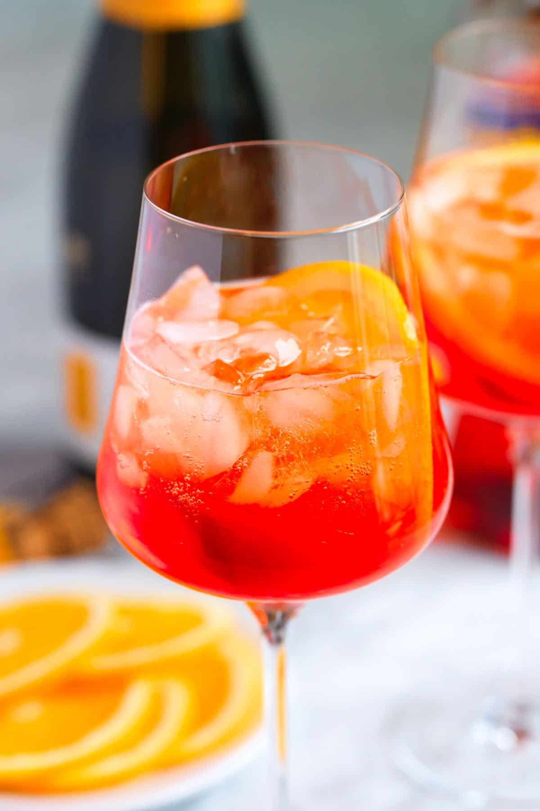

<div class="container py-5">
  <h1>Aperol Spritz 🍊</h1>

  

  <h3>Zutaten:</h3>
  <ul>
    <li>6 cl Prosecco</li>
    <li>4 cl Aperol</li>
    <li>2 cl Soda</li>
    <li>Orangenscheibe</li>
  </ul>

  <h3>Zubereitung:</h3>
  <p>Prosecco, Aperol und Soda in ein Glas mit Eis geben und leicht umrühren.</p>

  <a href="../index.html" class="btn btn-secondary mt-3">Zurück</a>
</div>
